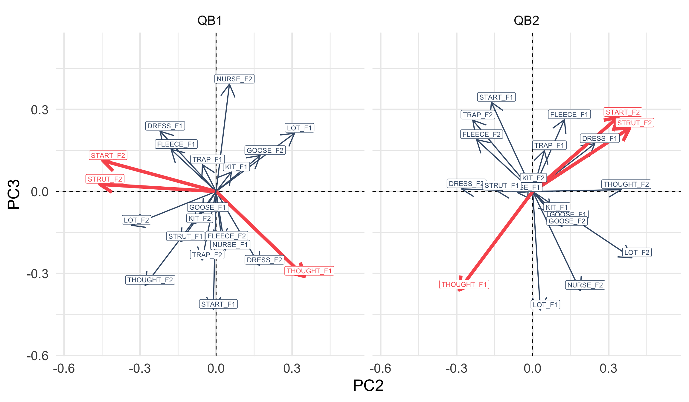
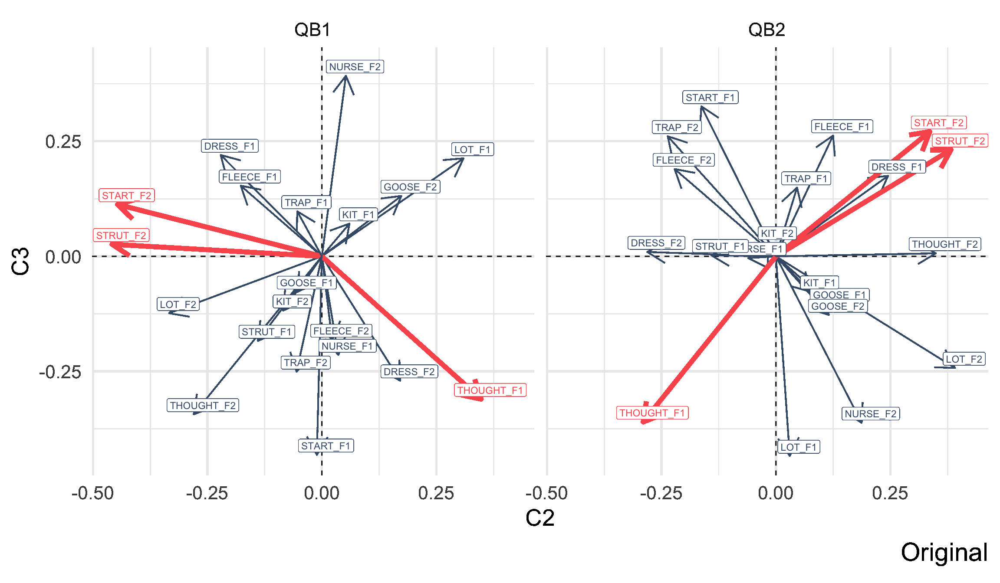
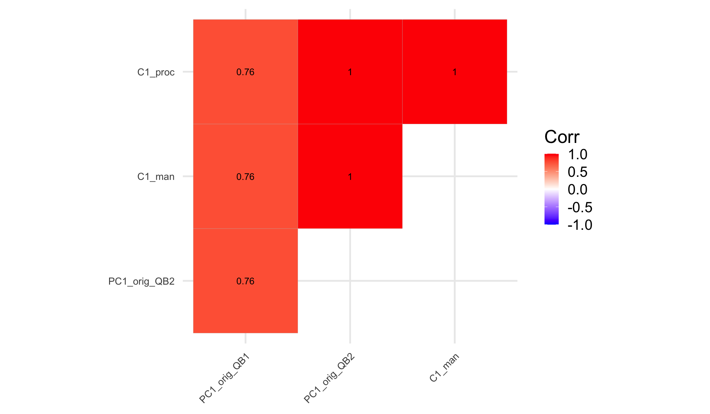
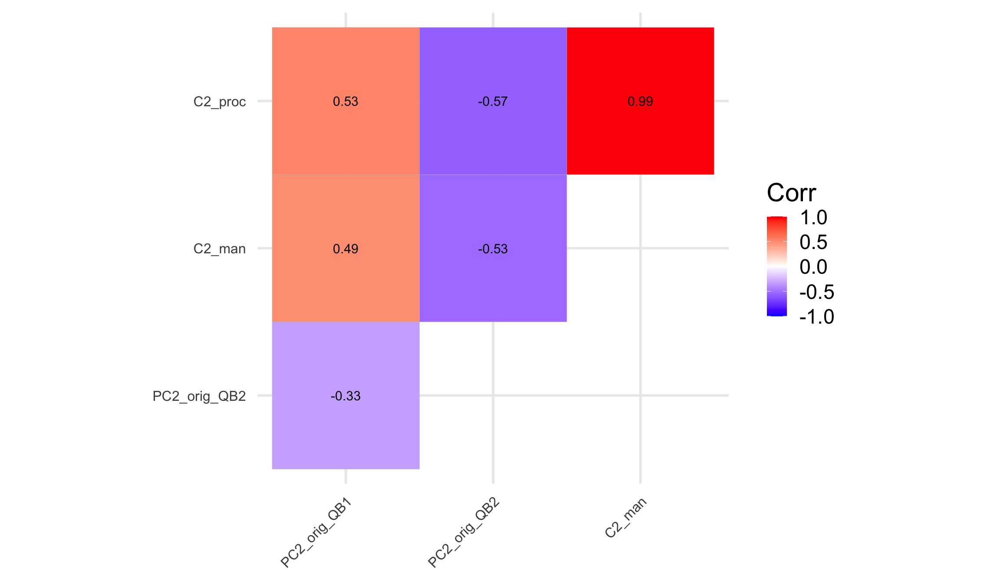
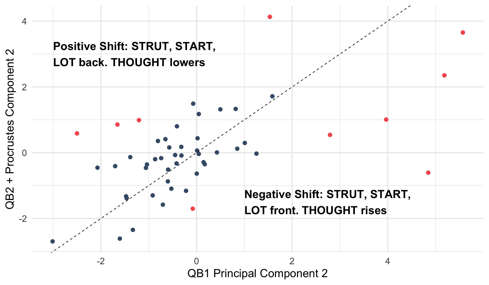

Rotating Principal Components to explore change over the lifespan in New Zealand English monophthongs
Elena Sheard & Joshua Wilson Black
Te Kāhui Roro Reo | New Zealand Institute of Language, Brain and Behaviour
Te Whare Wānanga o Waitaha | University of Canterbury
Methods in Dialectology, July 4
Background
- QuakeBox 1 (2010-2011) and QuakeBox 2 (2019-2021) contain monologues from the same speakers (n=51).
- Two questions:
- Are the patterns of covariation similar?
- Do speakers change their position with respect to these patterns?
- Yes to (1): Hurring et al. (Under review)
- Yes to (2): Sheard and Wilson Black (2023)
- Challenge: compare PCA across datasets.
Overview
- What is PCA?
- When is PCA unstable?
- Rotating and Scaling PCs
- Manual rotation
- Procrustes rotation
- Change over the life span in QuakeBox.
What is PCA?
What is PCA? (cont.)
- Find the centre of the cloud.
- Draw the line through the centre which stays in the cloud for the longest.
- i.e. the line which ‘maximises variance’.
- Draw the line through the centre which stays in the cloud for the longest and is a right angles to the previous lines.
- Repeat (3) until you run out of dimensions.
Loadings and Scores
- Original variables have loadings for each PC.
- Loadings tell us the relationship between PCs and original data.
- e.g.: increase in PC2 = decrease in kit and increase in dress and trap
- Each speaker has a score for each PC.
- Scores tell us where speakers sit given the PCs.
- e.g.: a high PC2 score means a conservative NZE speaker.
PCA Instability
PCA Instability
- Small changes in data → big changes in PCs.
- Outlier sensitivity.
- Competing structures:
- PC2 in one sample might be PC3 in another.
- Axis flipping.
- Direction along a PC is arbitrary.
Competing PCs in QB2

Overlap in variance explained.
PC2 and PC3 are unstable.
QB2 Instability

Comparing QB1 and QB2

We can flip.
But can we rotate?
PCA Rotation
Rotating PCs
- Rotation is a technique from Factor Analysis.
- Why?
- Increase ‘interpretability’ (Jolliffe 2002)
- Compare across analyses
- Rotated components are no longer “PCs”
- They don’t maximise variance explained.
- But the ‘space’ is maintained.
- Call this PCA + rotation.
Rotation and Comparison
- Simple approach to comparison: correlation.
- i.e. calculate correlation of two PC1s.
- Can easily underestimate similarity.
- … and overestimate difference!
- We’re interested in speakers who might have changed position.
How to Rotate?
- Manual rotation
- Decide where you want an arrow to go,
- work out the required angle,
- rotate.
- Procrustes rotation
- Rotate (and scale) to minimise sum of squared differences with reference.
For ‘interpretability’, other methods are used.
Manual Rotation
British Museum, CC BY 2.5, Wikimedia Commons
Procrustes Rotation
- Manual rotation is not systematic.
- Procrustes rotation minimises overall difference with respect to a reference shape.
- Procrustes rotation scales, so can handle axis flips.
- It is commonly used in community ecology (Peres-Neto and Jackson 2001)
- We use the
procrustes()function from theveganpackage.
- We use the
- Applied to the first \(n\) PCs (your \(n\) may vary!).
Procrustes Rotation
Change Over the Lifespan
(In)Stability (PC1)
(In)Stability (PC2)
Shifting Speakers
What is PC2, Anyway?
- QB1: PC2 is dominated by start F2, strut F2, and thought F1.
- Positive PC2 = Backer start /strut (and lot), lower thought
- Negative PC2 = Fronter start /strut (and lot), higher thought
- Does weaker correlation suggest instability in the back vowels for some individuals?
See Brand et al. (2021), where this relationship is captured by PC1.
Who is Shifting?
- We identified the ten speakers who have the largest difference between QB1 PC2 and QB2 + Procrustes rotation:
- 8 women, 3 Māori, 18-35 (n=2), 36-55 (n=7), 56-65 (n=1)
- We explore their back vowel midpoints (n = 3581)
- thought, lot, strut and start.
Who is Shifting? (cont.)
Vowel Space Analysis

Vowel Space Analysis (cont.)
Vowel Space Analysis (cont. 2)
- Speakers with QB1 → QB2 score increase (positive shift):
- Higher/backer thought, fronter lot, start, strut
- 3 Maori, all 35+
- Speakers with QB1 → QB2 score decrease (negative shift):
- Lower/fronter thought, backer lot, start, strut
- Non-Maori, 2 18-35.
- Consistent with broader Positive/Negative PC loading patterns
Summary
- Speakers remain stable with respect to NZE SFV shift between QB1 and QB2
- For some speakers, the relationship between four back vowels shifts
- Movement from each end of covarying pattern in QB1 towards the other in QB2
Conclusions
- PCA validated as :
- A means of tracking vocalic covariation in the community
- A diagnostic for changes over the lifespan across covarying vowels
- Importance of post-hoc analysis of variance
- Language change over the lifespan can encompass changing relationships within the vowel space
- Rotation in an important part of the PCA tool kit.
References
Brand, James, Jen Hay, Lynn Clark, Kevin Watson, and Márton Sóskuthy. 2021. “Systematic Co-Variation of Monophthongs Across Speakers of New Zealand English.” Journal Article. Journal of Phonetics 88: 101096.
Hurring, Gia, Joshua Wilson Black, Jen Hay, and Lynn Clark. Under review. “How Stable Are Patterns of Covariation Across Time?” Under review.
Jolliffe, Ian T. 2002. Principal Component Analysis. Springer.
Peres-Neto, Pedro R., and Donald A. Jackson. 2001. “How Well Do Multivariate Data Sets Match? The Advantages of a Procrustean Superimposition Approach over the Mantel Test.” Oecologia 129 (2): 169–78. https://doi.org/10.1007/s004420100720.
Sheard, Elena, and Joshua Wilson Black. 2023. “Change over the Lifespan Across Covarying New Zealand English Monophthongs.” Presented at the Annual Conference of the Australian Linguistic Society.
Wilson Black, Joshua, James Brand, Jen Hay, and Lynn Clark. 2023. “Using Principal Component Analysis to Explore Co‐variation of Vowels.” Journal Article. Language and Linguistics Compass 17 (1). https://doi.org/ https://doi.org/10.1111/lnc3.12479.
Appendix: data and models
- 51 speakers
- Satisfy data quantity and quality filtering steps at both recording points
- Generalised Additive Mixed Models (GAMMs) fit for F1 and F2 of same 10 monophthongs
- kit, dress, trap, fleece, nurse, goose, thought, lot, strut and start
- n = 22529 (QB1), 43403 (QB2)
- Gender, age (at QB1), and articulation rate as predictors